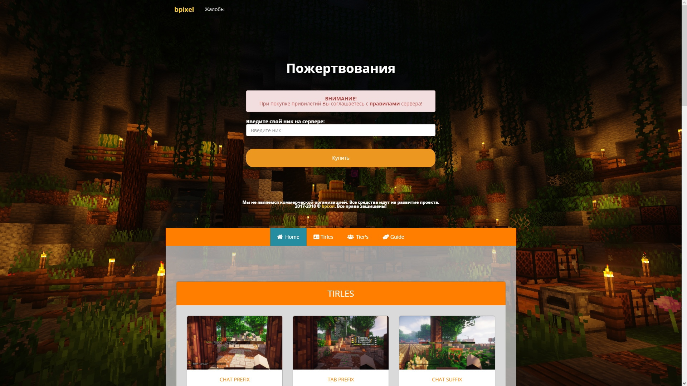
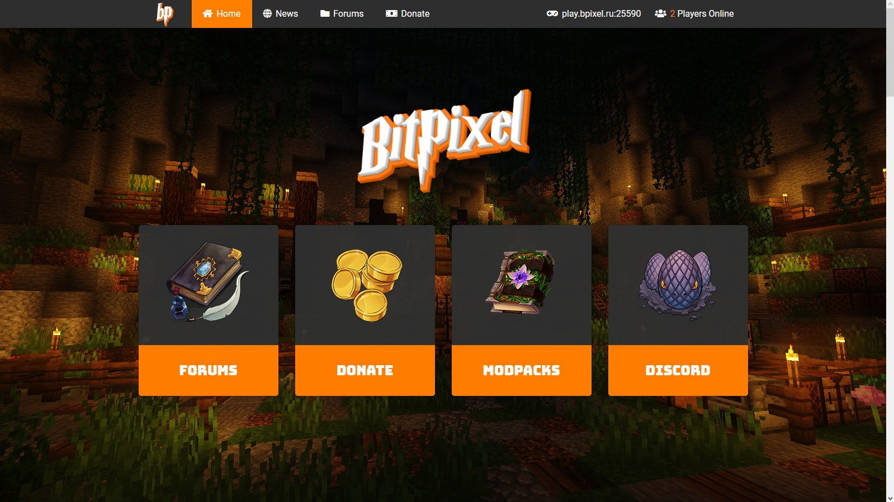

Bit Pixel
Сайт Minecraft-сервера — заказ друга, от идеи до деплоя
Задача
Друг просил создать для него сайт, который бы служил онлайн-картой его майнкрафт-сервера, имел формат трансляции, привязанной к боту на сервере, рандомно следящей за игроками, техподдержку и возможность оформить донат.
Что сделано
- Свёрстан адаптивный сайт с витриной услуг, новостями и статистикой сервера.
- Подключена карта сервера с онлайн-трансляцией.
- Настроена приёмка донатов и страница техподдержки.
Как выглядит


Итог
Самое сложное было подружить сторонний виджет трансляции с макетом — по документации он вставляется не так, как описано. Если бы делал заново, сразу начал бы с мобильной вёрстки, а не адаптировал её в конце.
Проект развивался после моей сдачи — текущий дизайн сервер уже переделал. Выше — скриншоты версии, которую делал я.